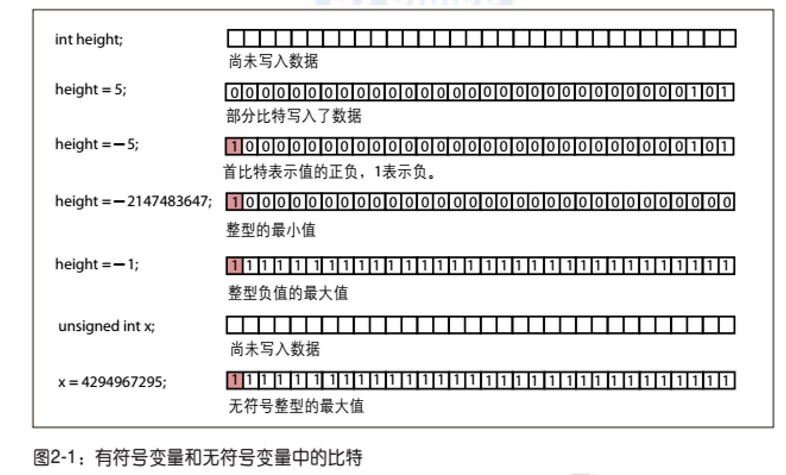
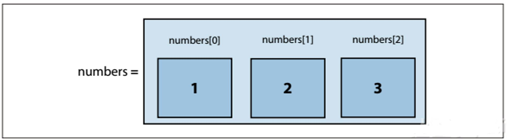
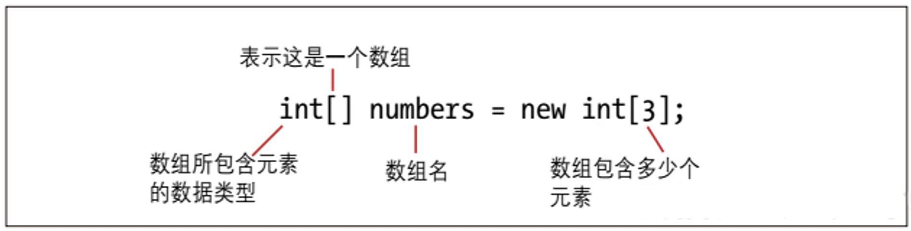
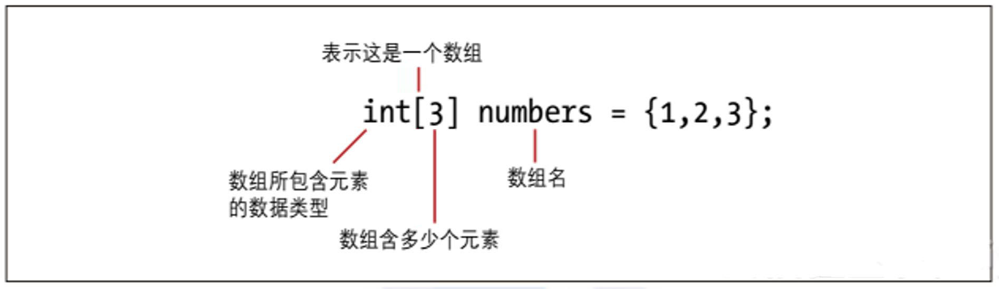
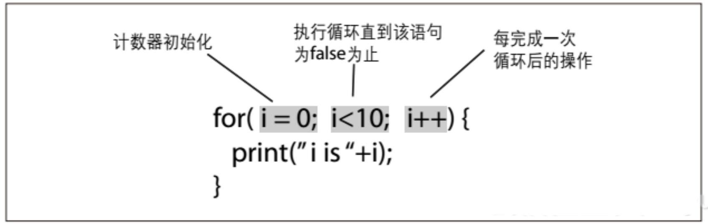
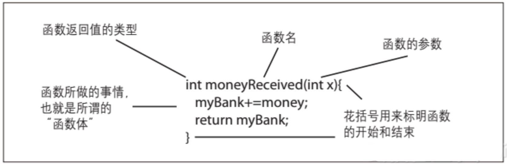
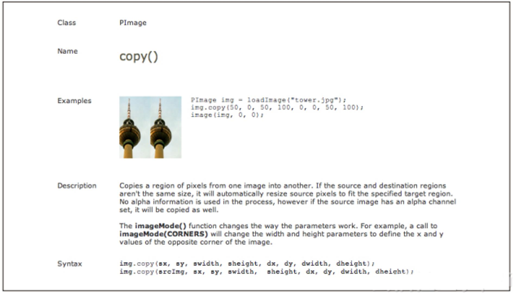
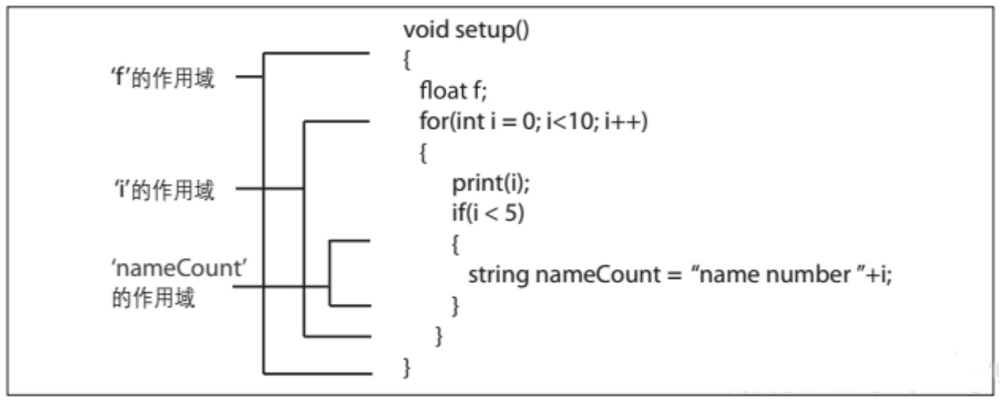

交互设计编程基础
编程基础
写代码不是很简单，但也不是你想象的那么难。一切编程的基础是简单的逻辑，而编程语言会使用很多简单的数学符号和英文单词。所以，如果你对例如等号和基本代数的这些东西感觉尚可，同时也略懂英文单词，那么就应该能上手。考虑到本书的特点，本章不得不言简意赅，虽然还有很多内容值得介绍。就算你一直只用一种语言写代码，那些错综复杂的事情也够你学若干年了，更何况难免还要用多种语言编程。不过一些基础知识学起来还是不难的，读文档、在用户论坛上请教、利用别人做好的现成的东西，然后你就发现自己能在较短的时间内创作作品和实现方案。本章是一个简炼的编程导论，编程是本书其他内容的基础。
不同的读者读本书有不同的方法。如果你只要代码能跑通运行，那么本章的内容就足够让你明白本书和网上的例子，并且能对它们稍做修改用在你的作品里。你肯定对本章很感兴趣，而且很有可能不止读一遍。我相当理解你的困窘，因为我也曾经和你一样。不过你要知道，仅是不明就里地复制、粘贴代码，很容易就会产生挫败感；而大概了解代码，知道它们在干什么，就能多做很多事情。如果你不仅要代码能运行，还想知道为什么能运行，那么本章就是一个导论。你看完这一章，然后看一些例子，很有可能会再回到这一章，这很好。你还可能很快就想去读其他的书，第17章列出的书单应该会对你有用。如果你已经对本书的一部分内容很熟悉，但也有一部分是不了解的，那么就可以通过本章来复习一下，或者干脆跳过本章。如果你对Processing、Arduino或C++不是太熟的话，那还是快速浏览一下吧；如果对上述编程语言已经熟悉，可以直接跳到介绍这些工具的章节，或者看第5章关于编程的进阶内容。无论属于哪一种类型的读者，你都应该充分地学习以确保明白本书接下来列出的所有代码。
为什么本章你会读不止一次
你在第一次读这一章的时候，很有可能觉得有些内容不知所云，这是我早有预料的正常现象。在你读后面的内容遇到问题时，你再回到这一章来。代码只有放在你所感兴趣的上下文和场景中来看才有意义。有些内容初次看来没有意思，直到看到它们在实际中的使用，耐心一点，把它们一一分析，你会发现没有什么是异常复杂的。不懂的时候不要害怕，只管回到这一章来好了。尤其不要害怕把书里的代码复制过去并修改它，直至它崩溃。抠一下代码，拿掉可以运行的部分，使其崩溃，然后找出它崩溃的原因，这是最好的学习方法。当然，本书的目的是提供能用的代码，让你稍作修改就能用到自己的项目里，满足上述第一类读者的需求。无论是哪一种情况，都需要耐心，因为第一次学总会有不懂的地方。有点耐心，乐意尝试，失败后再尝试，其实写代码并没有那么难。
代码的本质
你会从本章学习关于编程的知识，确切地说，就是写代码。所以你不仅需要知道什么是代码，还要知道代码是怎样参与编程过程的。在开始编程之前，先学习几个关键的术语。
代码
代码就是一系列让计算机执行的指令。运行代码，则计算机执行相应指令。代码由某种编程语言写成。跟自然语言一样，编程语言就是双方之间的一个协议。在代码中，这两方就是程序员和编译器。编译器我们稍后会学到，这里暂且把它看成是一个听得懂我们的代码的聆听者。代码可以简单得只是把两个数字加起来，也可以复杂得能渲染一部动画。归根结底，就是要针对编译器，用某种编程语言和文档编辑器写出正确的指令，并且告诉编译器执行哪个文件里的指令。写代码就是往一个文本文件里敲代码，而这个文件随后会传给编译器。写程序可以是从零开始写源代码，也可以是把若干程序整合起来，创建不同程序之间沟通的方式。这个过程也可认为是装配预建构件。构建程序项目不一定需要自己写代码，但你有本书在手，或者就会有兴趣写代码了。
文件
代码存放在文本文件里，任何文档编辑器都能打开。这些文件里除了代码就别无他物了。在规模较大和较复杂的项目里，还会把多个文件连起来。有些大项目包含了几百个代码文件，所有这些文件连起来组成该应用程序的代码总体。Arduino项目使用.ino文件，有时也用.c文件。Processing用的是.pde文件，间或用.java文件。openFrameworks使用.cpp文件和.h文件。不同类型的文件有不同的目的，做着不同的事。这些你稍后会看到。
编译器
编译器本身是一个程序，它可以把一个或多个代码文件转化为计算机读得懂的指令，让计算机将这些指令作为一个程序运行。绝大多数的现代计算机不能直接处理你写的指令，要用编译器把代码转译成机器指令。编译器还能优化机器指令让计算机快速运行之。但机器指令让人来写是非常困难的，所以先用便于人类理解的方式写出代码，再转译成适合机器理解的指令。也就是说，写出来一个Arduino控制器代码或者Java代码，你不是直接运行它，而是先编译它，让编译器生成一个计算机能运行的可执行文件。你可以把写代码的过程看成一系列的翻译，用一种高级语言（如Processing或C++）写程序告诉编译器你想做什么，然后编译器据此生成一个用机器语言写的文件并运行之。
可执行文件
可执行文件可作为应用程序运行，是代码编写和编译的结果。“可执行文件”这个名词有时和“应用程序”交替使用，但它们是不一样的。一个应用程序包含多个或一个可执行文件。你在本书中学习搭建的项目，最后都会生成一个可执行文件。
现在你可以开始写代码了。
变量
学习变量是入门首选。你在第一节代数课就学习了变量。你可能还记得当时黑板上写着这样的式子：
x = 5
它的意思是“有个名叫x的东西等于数字5”。计算机里变量与此类似。变量代表某些事物，更准确地说，是代表特定类型的事物。这一点跟代数里的例子有所不同，计算机里的变量x不一定是一个确切的数目，而只需要说明“x是一个数”。如果你的代码要定义一个名叫x的数，并且把它用作变量，你可以这样写：
int x;
int用来说明或设定变量的种类。变量的种类不是任意的，需要你去定义。变量的种类称为“类型”，在2.3.1节我们会详细讨论，现在先把关于变量的基础知识了解一下。
int x = 5;
这一行代码定义了一个名为x的变量，它是值为5的整数。在计算机的存储器里的某个地方，有了一个名为x的东西，在它那里存放了一个数值5。你可以马上设置x的值，例如int x = 5；也可以先定义好稍后再使用，例如 int x。我们来看另一个例子：
int y = 10;
int x = 5;
int z = x + y;
这三行代码定义了3个变量，给其中两个直接赋了值，并把它们的和赋值给第3个变量。
一些简单的类型
在本书所提及的平台里，所有的变量都有特定的“类型”。计算机根据变量的类型判断变量里存放的是什么种类的东西。数值、字母（通常称为“字符”）和true/false（真/假，通常称为布尔值）各需要不同大小的空间来存放和移动。
以下是一些最常见的类型，你会在本书涉及的任何一种编程语言中见到它们。
整型（int）
整型用于存放整数，没有小数点，例如2或20 392。下面我们来解决本章的第一个问题：本书用到了3种编程语言，它们包含的东西都差不多，但有时作用却有些不同。在Processing语言中，整数的范围是－2 147 483 648～2 147 483 647。而Arduino语言和openFrameworks（oF）所使用的C++中，情况则有些许不同。要明白为什么会有这个不同，就需要先快速理解一下有符号变量和无符号变量，这点我们在下一小节讨论。这一小节一开始理解起来可能会有些困难，你可能想跳过它，尤其是如果你比较感兴趣的是Processing的话。
有符号（signed）和无符号（unsigned）
如前文所述，需要声明变量的类型，以通知计算机分配多少空间存放该变量。也就是说，一个整型数据是4字节（即32比特）长度的信息，它能容纳4字节的信息量。那么对于负整数又是怎样的状况呢？这时你就要把符号信息也存下来，遇到是负整数，就把原来整数的值按某种方式取反一下。我们以oF要用到的C++为例，其他语言以此类推。在C++里，整型的范围为－2 147 483 647～2 147 483 647。如果你用到的整型里没有负数，你就可以用无符号整型，它的取值范围为0～4 294 967 295。这就是有符号变量和无符号变量之间的区别。无符号变量不能存放负数，而有符号变量可以存放负数。其中的原理要用二进制来解释。
整型是32比特的二进制数。不像我们平常用0到9来记数，二进制用的是1和0。也就是说，你在存储器的那个位置写了个1，值就是1；当你要存放数值2的时候，你就要往存储器里写10，意思是权值为2的数位上是1，权值为1的数位上是0。如果是数值3，那就是11，意思是权值为2的数位上是1，权值为1的数位上也是1， 2+1即为3。接下来，4就是100，意思是权值为4的数位上是1，其他数位为0。同理，16就是1000，17是1001，18是1010，以此类推。这是所谓的二补数，因为每一位的权值是前一位的平方。这里只是对二进制的简单介绍，别着急，在后面的章节里我们会对此详细讨论，并且你还会开始使用比特和二进制。
我们可以从图2-1看到有符号变量和无符号变量是怎样存放和表示的。C++里整型的长度是32比特，所以用32格来表示一个整型数，1格对应1比特。
无符号数的首比特（最高位）跟其他比特一样用来计数，而有符号数的首比特表示的是数值的正或者负，所以无符号变量可表示的最大值比有符号变量大。
Arduino和C++可使用无符号变量，但定义变量时默认其有符号，定义无符号变量的时候要特别声明，即在变量类型前面添加“unsigned”：
unsigned int = 5;
Processing不使用无符号变量，所有数值变量都有符号。
在oF所使用的C++里，有符号整型的范围为－2 147 483 647 ～2 147 483 647，无符号整型的范围为0～4 294 967 295。而在Arduino中，整型的范围为－32 768～32 767。复杂吗？其实不然。大多数情况下，不用考究整型里到底存放了些什么数据。如果要用一个很大的值，可以使用值域更大的数据类型，例如长整型（long）或双精度型（double）。这些稍后我们会讨论到。使用Processing的时候，你一点不用担心数值的大小问题，只需要想想要不要用小数。如果用小数，就用浮点型（float）；如果用不到小数，就用整型。

图2-1：有符号变量和无符号变量中的比特
浮点型（float）
浮点型用来表示小数。浮点数比整型数值域更大，可近似地表示连续数值。有符号浮点数的取值范围为－2 147 483 647～2 147 483 647。C++和Arduino里的浮点数是无符号的。
字符型（char）
这种类型用来表示字符，即单个字母或印刷符号，例如A、d和$。下面是两个字符型变量的声明：
char firstLetter = 'a';
char secondLetter = 'b';
那么浮点型、整型和字符型之间有何不同呢？字符型变量有时也可以像数那样相加，但不是你想象中的那种方式。Processing和Arduino里字符型变量不可以相加，而在C++里可以，但不是你想象的那样：
char thirdLetter = 'a' + 'b'; // 相加结果不会是'ab'或者'c'
正如前文所述，Processing和Arduino不允许这样的运算，它们会直接向你报错。而C++允许字符型变量相加，其运算的原理稍后讨论。
ASCII字符
在计算机里有若干种存储方式，其中一种就是把字符存为数，而ASCII（American Standard Code for Information Interchange，美国信息交换标准码）就是为此而设计的系统。ASCIⅡ设定了字符“a”对应值97，“b”对应值98。所以如果你在C++编译器、Processing.或Arduino.里运行以下3行代码，你会得到一个值为195的c：char a 'a'；char b 'b'；int c=a+b；//注意a+b的结果存为一个整型数
把两个字符型变量相加，实际上是把它们所对应的值相加，所以你可以用一个整型变量来存放它们相加的结果。
键盘上每一个键都可以对应到一个字符，包括一些功能键。用字符表示功能键的时候需要用到“转义字符”。“转义字符”在程序中有特殊的作用。当某些键无法用字母或数字表示时，可通过转义字符使之获得相应的字符表示。除了ASCIⅡ，还有其他的编码系统可以把数值和字母对应起来。UTF（Unicode Transformation Format，统一码转换格式）是其中很常用的一个系统，你可能在之前也听说过。编码是一个复杂的主题，而我们只需谨记字符型变量既是数也是字符
布尔型（bool或boolean）
布尔型变量有两个取值：true（真）和false（假）。C++和Arduino里的true值为1，false为0。直接使用true和false很清楚，但如果你喜欢，也可以用1和0。布尔型非常方便用来存储简单的结果：例如你收到了服务器发出的消息还是没有收到，用户按了F键还是没有按。
Arduino和Processing里的代码可以这样写：
boolean b = true;
C++里这样写：
bool b = true;
注意，布尔型在Processing和Arduino里用“boolean”表示，在C++里用“bool”表示。
true和false都是保留字，也就是说，编译器永远只会把它们理解为布尔型变量的值，不会再有其他意义。例如，这样写是不对的：
boolean true = false;
编译器会报错。虽然这样的错误难以避免，但你最好尽量减少这样的错误，而把精力集中在有助于你创作的更有意思的事情上。
字符串（string）
字符串就是一串字符。这样的说法只是打个比方，但确实有助于理解。稍后我们会对此作更仔细的讨论。字符串有若干有用的方法（method），例如查询当中的每个字符，比较字符串之间的异同，查找字符串里的某部分（例如从“toaster”中查找“toast”），提取字符串里的某部分（例如从“toaster”中提取“toast”）。字符串和字符的差别在于，字符串总是包括在双引号里（例如 “Abc”）并可含有多个字符，而字符是包括在单引号里（例如‘A’）并且只含一个字符。
Processing里字符串可以这样表示：
String f = "foo";
String b = "bar";
String fb = f+b; // 相加的结果是 "foobar"
C++里字符串可以这样表示：
string f = "foo";
string b = "bar";
string foobar = f+" "+b;// 结果是"foo bar" ，留意双引号内的空格
我们已经看到了Processing里用String，C++里用String，那么Arduino呢？Arduino不使用字符串，因为它根本不需要。到下一节我们再讨论Arduino的这个问题，反正不是什么大问题。
字符串由双引号括住：
string super = "super";
若字符串本身含有双引号，则要在该双引号之前加反斜杠：
string quoted = "He said "It's super"."
这个反斜杠就是之前提到的 “转义字符”，能把紧接其后的一个字符按某种规定换成其他的意义。使用转义字符的例子还有：t表示tab键，n表示新起一行，\表示反斜杠（若只用一根反斜杠，则编译器会认为是转义字符）。如果你想打出that抯 great!，就应该这样写：
string quoted = "\\that's great!";
否则，缺少了双反斜杠，你得到的将是
" hat's great!"
编译器认为\t是tab。
字节型（byte）
字节型是以字节为单位计算的数据类型，也就是说，8位的信息存为1个数值。Processing的字节型变量取值从－128到127（有符号数），Arduino的是从0到255（无符号数）。当要发送字符串或其他类型无法表示的信息时，就要用到字节型，例如文件中的内容、硬件收发的数据、图像的像素数据或1毫秒的声音数据。
以下是字节型变量在Processing和Arduino里的例子：
byte firstByte = 55;
byte newByte = 10+firstByte;
现在可以随意摆布字节型变量newByte了。如果把它用作字符，就会得到A；如果用作一个整数，就是65。字节型变量使用起来很灵活，经常用于存放有待读写或发送的数据，又或者是那些没有合适数据类型存放的数据。
C++没有字节型。在Processing和Arduino里用字节型存放的数据，在C++里可以用字符型。这是为什么呢？你应该还记得ASCII码用－128～127（或者无符号字符型的0～225）的数字表示字母或字符。C++承继了C语言的这个特点，字符型变量不仅用于存储字符，还可以是任何东西。比起Processing和Arduino， C++使用字符型变量要频繁得多。
长整型（long）
长整型变量用于存储非浮点型的长度较长的整数，跟整型的不同在于取值范围。在C++和Arduino中，长整型取值从－2 147 483 648到2 147 483 647。而在Processing中，长整型的最大值就更大了，为18 446 744 073 709 551 615。
数组
数组比之前提到的数据类型要复杂一点。一个数组由1个或多个变量排列而成。要记住一点，本书一直在讨论的三个工具，它们工作起来是稍有不同的。我们现在就来看看，这三个工具各是如何填充数组的。
数组是由多个元素组成的列表。在以下的程序段里，数组包含的是整数1、2和3。这并没什么精妙之外，但会是个不错的起点。
注意图2-2数组里每个元素头上的标记：numbers[0]、numbers[1]和 numbers[2]，这些是访问数组的运算符。不是录入错误，的确是从0开始。等我们学会怎么创建数组之后再回头讨论这个0的问题。

图2-2：含3个整数的数组
这个数组在Processing里是这样建立的：
int[] numbers = new int[3];
numbers[0] = 1;
numbers[1] = 2;
numbers[2] = 3;
首先看这个数组的声明，如图2-3所示。

图2-3：Processing对数组的声明，该数组包含3个整数
数组所包含的元素可以是任何类型，甚至是你自己创造的类型。以上代码块将数组里每一个元素都赋值了。可使用运算符[ ]来访问方括号中序号所指的那个元素。
int x = numbers[0];
上面这一行将x赋值为1，因为数组中首个元素是1。
int y = numbers[1] + numbers[2];
上面这一行将y赋值为第2个元素和第3个元素的和，即2+3，得到5。如果把等号放在带有访问运算符的后面，则是对其指向的数组元素赋值：
numbers[0] = 1;
numbers[0] = 5;
numbers[0]起初等于1，现在变成了5。数组就是一个仓库，其中每个元素是盒子，盒子里存放着声明里所规定类型的数据。数组元素一旦赋值，则其值一直不变，直到将它重新赋值。
以上我们对数组中的元素逐个赋值，每次赋值使用了一行代码。其实也可以在一行内完成数组的赋值。
int arr[] = {1, 2, 3};
或
int arr[3] = {1, 2, 3};
注意，定义数组的时候不需要指明它的长度，例如上面的第一种写法。当然，要一次性地将数组元素全部赋值，你需要知道每个数组元素的值，否则还是建议你使用我们最先提到的逐个赋值的方法。
接下来我们看一下在Arduino中如何声明数组。其实跟在Processing中是差不多的，在Arduino或C++里创建数组有下面三种方式：
int arr[] = {1, 2, 3};
或
int arr[3];
或
int array[3] = {1, 2, 3};
图2-4把数组分解成了几个部分。

图2-4：在C++中创建数组
Processing唯一不同于Arduino的是，Processing支持用new这个关键字创建数组。如果知道数组中所有元素的值，你可以这样写：
int array[3] = {1, 2, 3};
否则，你应该这样写：
int[] arr = new int[3];
我们已经掌握了数组的基础知识，现在可以去探讨一些较复杂的内容。首先我们来看看你必定会遇到的一些错误，例如各种各样的“越界访问”。越界访问就是指你访问了一个并不存在于数组中的元素。
在Arduino和C++里，数组可以这样初始化：
char arr[3] = {'a', 'b', 'c'};
char badArrayAccess = arr[3];
当你想使用变量badArrayAccess时，你会发现不仅它不是一个字符，而且访问它会导致程序崩溃。数组arr有3个变量，但现在你却试图访问它的第4个变量，与当初定义arr时所指定的数组长度不符。另一个常见错误则是把与数组类型不符的变量存放于数组中，例如：
char arr[3];// 字符型数组，含有3个变量
float f = 2.3;
arr[0] = f; // 糟糕！arr是字符型，所以“2.3”会自动变成“2”
bool b = true;
arr[1] = b; // 糟糕！arr是字符型，所以真值b会变成 “1”再赋值给arr[1]
编译平台不会对以上的代码报错，但结果是不对的，因为数组声明它所装载的元素是字符变量，而你却往里面放浮点型和布尔型变量，因此它们会被自动转化成字符型变量，后果经常难以控制和预测。表2-1对各个数据类型作了简明的比较，并列出在3种编程语言中的表示方式。
表2-1：数据类型比较
| Arduino | Processing | C++ | 用法 |
|---|---|---|---|
int |
int |
int |
没有小数点的数，例如4、一12 |
float |
float |
float |
带小数点的数，例如1.23、-128.12 |
char |
char |
char |
单个字符或用来表示字符的数，例如a、1、！ |
无（使用char[]代替） |
String |
String |
一串字符，例如hello、172 Cherry Street |
byte |
byte |
无（使用char代替） |
byte的取值范围为-128~127（有符号型）或0~255（（无符号型） |
boolean |
boolean |
boolean |
值为true或false是 |
double（其实和float是一样的） |
double |
double |
比float精度更高的浮点数 |
类型转换
如果你手头上有一个整数，却要把它当成浮点数来使用，该怎么办呢？这时你可以使用“类型转换”，也就是把数据从原来的类型变成你所要使用的类型。 Processing、Arduino和C++的类型转换都是一样的，如下：
int i = 5; float f = (float)i; // float变成了浮点值5.0
为什么不可以像这样：
float f = i;
把i的值直接赋给f呢？把数据分为各种类型，就是为了阻止不同类型数据之间的直接赋值。知道了数据的类型，就可以确定它所需要的存储空间和用法。以上最后一行代码引起的错误可以通过数据类型转换解决。变量一旦定义，其类型就无法改变。在这个例子里，i永远是整型，若你希望把它作为浮点数使用，就要做类型转换，这并不复杂。接下来的例子里会用到字符型，因为字符型实在是太基本的数据类型了。例如，如果你要把一个字符型变量转为浮点型，再转为字符型，可以采用以下的做法：
char ch = 'f'; int fAsInt = (int)ch;// fAsInt的值是102 char newChar = char(fAsInt); // newChar的是字符 'f'
需要注意，不能对数组进行类型转换：
char[] foo = {'a', 'b', 'c', 'd'}; int[](foo); // 错误
如果想对数组进行任何类型方面的转换，就要对它的元素进行操作。在2.4节有关循环的内容中我们会解决这个问题。现在我们看这两行代码：
char[] foo = {'a', 'b', 'c', 'd'}; int i = int(foo[0]);
以上代码创建了一个字符数组，并且把其中一个元素转换为整型。
运算符
在程序中，运算符就是编译器用来执行命令和运算的符号，例如“=”用来赋值，“==”用来比较等。运算符有三类：一是数学运算符，用于数学运算，就跟数学课上学到的一样；二是赋值运算符，用来改变变量的值；三是比较运算符，比较两个变量是否相等，谁大谁小。 数学运算符的用法就跟一般数学式子里的一样。用“+”可以把两个变量相加，例如：
int apples = 5；
int moreApples = apples + 3// moreApples等于8。但若是把两组字符串相加就有所不同了，结果是两组字符串接在一起：
string first = "John";
string second = "Brown";
string full = first+second; // full等于JohnBrown这样的结果是由所谓“运算符重载”造成的。这个话题有点高级，这本书里不作介绍，有兴趣的读者可以参考第17章列出的编程书目或是上网查阅。 其他简单的数学运算符有“－”（减）、“*”（乘）和“/”（除），还有“%”（取模）。 取模就是左边的数除以右边的数所得的余数。下面是一些例子：
8 % 2 // 结果等于0，8被2除无余数 17 % 2 // 结果等于1，17除以2的余数是1 19 % 5 // 结果等于4，19除以5的余数是4 12 % 11 // 结果等于1，12除以11的余数是1 19.0 % 5 // 结果等于4.0，因为是对浮点变量做取模运算
赋值运算符从右侧开始起作用，也就是说，运算符把右侧变量的值赋给左侧变量，例如：
int age =6
“=”把左边变量的值设为6。跟“=”类似，以下运算符也用来设置左侧变量的值。 += 把右侧的值加到左侧变量的原值上再赋给左侧变量：
int height = 6;
height += 1// height等于7
height += 10// height等于17-= 把右侧的值从左侧变量的原值减掉再赋给左侧变量：
int size = 16;
size -= 8// size等于8
size -= 6// size等于2++和-- 把左侧变量的值加1或减1:
int hearts = 2;
hearts++; // hearts值为3
hearts--; // hearts变为2
hearts--; // hearts变为1 *= 或 /=
道理跟“+=”和“－=”一样，用右侧的值乘或者除左侧变量的原值再赋给左侧：
int i = 15;
i /= 3// i等于5
int j = 20;
j /= 2// j等于10
float k = 100.0;
k /= 3.333333// k等于30.000004
float m = 100.0;
m /= '2'// 不建议这样做
i *= 4// i等于20
m *= 0.5// m原值为2.0，现在等于1.0值的比较对编程来讲十分重要，尤其是在一些控制语句里。2.4节会讲控制语句，现在先来熟悉一下各种比较运算符。我们接下来会经常遇到它们。在不同的编程语言里，比较运算符略有不同。比较运算就是判断变量的值是否相等，谁大谁小。
==（相等） 比较两者是否相等，例如：
5 == 4// false
'a' == 'a' // true
(12 / 3) == (2 * 2); // true
4.1 == 4 // false
char(102) == int('f') // true, 因为ASCII里 'f' 对应值102
"duck" == 0.002 // false, 该操作无效
!=（不相等）判断两者是否不相等，例如：
3 != 1 //true, 它们的确不相等
'B' != 'b' // 也是true, 它们不相等
>（大于）判断左侧的值是否大于右侧的值，跟数学课上教的是一样的：
43 // true
5192901.2 //false
"fudge"8 // false, 该操作无效
<（小于）判断左侧的值是否小于右侧的值，仍然跟数学课上教的一样：
3 < 2 // false
'g' < 106 // 'g' 在ASCII里的值为103，所以结果为true
-100 < 100 // true
>=（大于或等于）判断左侧的值是否大于或等于右侧的值，数学课也是这么教的：
3 >= 3 // true, 因为它们相等
0 >= －0.001 // 0大于－0.001, 因此结果是true
'?' >= 'h' // false, 因为 '?'的ASCII 码是63 ，而'h'是104
4 >= 28 // false
"happy" >= "sad" // false, 该操作无效
<=（小于或等于）判断左侧的值是否小于或者等于右侧的值，嗯，大家数学应该都还不错：
13.001 <= 13.001 // true, 它们相等
0 <= －0.001 // 0 比－0.001大, 因此结果为false
'!' <= '7' // true, 因为 '!'的 ASCII码是33，而'7'是55
&&判断左侧的语句和右侧的语句是否同时为true：
(43) && ('f''1') // true
((5 * 2) == 10) && ((6 - 3) != 4) // true
(5 < 10) && (24) // false, 左侧为true但右侧不是
||判断左边的语句和右边的语句中是否至少有一个为true：
(4 < 3) || ('f''e') // true, 尽管左侧为false，但右侧为true
((5 * 2) == 10) || ((6 - 3) != 4) // 两侧都为true
('b'=='g') || (24) // false, 两侧都为false对于以上的比较和判断，你可能还心存不解，他们到底用来做什么。别急，在控制语句里，它们就能一展身手了。表2-2列出了上述所有运算符及其用法。 表2-2：运算符及其用法
- 算符
- 用法
- +，-，*，/
加，减，乘，除
- %
取模，返回除法运算的余数
- =
赋值，把右侧的值赋给左侧变量
- +=，-=，*=，/=
数学赋值：用右侧的值加、减、乘、除左侧变量原值，并把结果赋给左侧变量
- ++
向左侧变量加1
- --
从左侧变量减1
- ==
比较左右两侧的值，如果相等，表达式结果为true
- !=
比较左右两侧的值，如果不相等，表达式结果为true
- <，<=
比较左右两侧的值，如果左侧值大于或不小于右侧值，表达式结果为true
- >，>=
比较左右两侧的值，如果左侧值小于或不大于右侧值，表达式结果为true
- &&
比较左右两侧表达式的结果，如果两侧都为true，则结果为true
- ||
比较左右两侧表达式的结果，只要其中一侧为true，则结果为true
控制语句
你经常需要控制程序的逻辑流程。如果某个条件成立，则执行某些操作；不成立则执行另外的操作。有时你想多次重复某个操作直到条件有所变化。你可以使用两种控制语句来实现以上提及的逻辑流程：一种是条件逻辑语句，判断条件为true还是false；另一种是循环语句，对一个操作重复一定的次数，或者一直重复到某个条件变为false为止。
2.4.1 if/then
if/then是一组条件逻辑语句，用法就跟这两个单词在英语中的意思差不多：“如果（if）下雨，那么（then）我就带把伞。”这个语句可以这样用：
if(条件) {
条件为true时的结果
} else {
条件为false时的结果
}紧接着“if”的圆括号里必须是一个返回布尔类型值（true或false）的表达式。例如：
int myWeight = 72if(myWeight > 100) {
print(" you're getting heavy! ");
} else {
print(" you're still doing ok ");
}
“else”不是必需的：
int myHeight = 181if(myHeight > 200) {
print(" you're too tall ");
}只有当if的条件语句为true时，才执行花括号里的操作；如果条件语句不为true，则什么都不做。你可以试一试把条件设为false，看看结果。
boolean allDone = falseif(!allDone) { // 如果allDone的值取反后为true
print(" keep going! ");
} else {
print(" ok, quit! ");
}条件控制语句还有一种写法：
if(age == 5){
print(" you're 5!");
} else if(age == 25) {
print(" you're 25!");
} else {
print(" can't login "); // 如果以上皆非
}在上面这个例子里，使用了一个新语句“else if”，其作用在于在进入else条件判断之前插入一个判断。也就是如果第一个条件不为true，那么就看else if的条件是否为true，如果仍然不为true，就流到最后的else语句。
2.4.2 for循环
使用for语句可以按一定的次数和条件重复同一个操作。循环经常用于遍历数组元素，逐个元素地访问、使用或变更。循环非常有用，尤其是在处理图像像素、视频帧、声音、网络数据以及其他需要分类或排序的信息的时候：
int i;
for(i = 0; i < 10; i++) {
print(char(i)+", "); // 将打印 0, 1, 2, 3, 4, 5, 6, 7, 8, 9,
}for语句的条件里有3个部分，如图2-5所示。 整数i用来设定循环执行的次数，每次循环执行花括号里的语句。初始化for循环的时候，把i设为0，只要i不大于10，循环继续执行，每执行完一次循环，i值增加1。 i也可以用自减来计数：
for(int i = 5; i>-1; i--){
print(i);
}
图2-5：for循环 for循环另外一个巨大的用处就是遍历数组元素：
int[] intArr = {0, 1, 2, 3, 4, 5};
int sum = 0for(int j = 0; j < 6; j++){
sum += intArr[j]; // 通过循环得到数组中的元素
}循环每执行一次，数组intArr的下一个整型元素就会累加到Sum。
2.4.3 while循环
while循环和for循环类似，只是看起来简单一点：
while(trueOrFalse){
//每次循环执行的操作
}只要while括号里的表达式仍然为true，循环就继续执行。要注意的是，如果括号里表达式一直不变为false，那么循环永远不会停下来，程序就会跑死。这叫“死循环”——无法终止并跳出的循环，会让程序无法使用甚至崩溃。所以在使用控制语句的时候，要对终止条件多加小心。下面是一个使用了计数器的例子：
int j = 0while(j < 100) {
print(" what's up? "+j);
j++; // 如果j不自加，就会变成死循环
}每执行一次循环，j自加1。当j不小于100的时候，就会跳出循环，程序继续往下执行：
boolean ready = false;
float number = 0.0while(ready != true) {
print(" we're just waiting" );
number += 0.1if(number > 1.0){
ready = true;
}
}
print(" we're ready ");在上面这个例子里，使用了一个自增的数和一个布尔型变量，去判断是否准备好（ready）跳出循环。直到变量ready变为true，循环才会停止，然后打印出“we抮e ready”的消息。
2.4.4 continue
continue语句告知程序跳过当前循环的其他语句而直接进行下一个循环。例如，如果你要循环若干次，但只在奇数次的时候执行某些操作，可以这样做：
for(int i = 0; i< 10; i++) {if( i % 2 == 0){continue;
}
println(i + " is not divisible by 2");
}程序打印出以下内容：
1 is not divisible by 2
3 is not divisible by 2
5 is not divisible by 2
7 is not divisible by 2
9 is not divisible by 2continue语句让程序跳进下一次循环。如果你有一个复杂的操作，可以使用continue语句去控制是否跳过这个操作而进入下一次循环，也就是说，可以避免程序做多余的事情。
2.4.5 break
使用break语句可中止循环。通常为了寻找某个东西而遍历一个数组，而当你找到它的时候，就可以用break语句轻松中止循环不再查找了，代码可以这样写：
int[] intArr = {1, 2, 3, 4, 5, 6, 2, 12, 2, 1, 19, 123, 1, 3, 13};
int counter = 0while(counter < intArr.length)
{if(intArr[counter] == 5) { // 正在寻找5
print(" found it at ");break;
}
counter++;
}
// break执行完毕后，代码从这里继续执行
print(counter); // 元素intArr[4]就是5函数
函数是什么？ 我们会把代码分组，每个组里有一行或多行代码，而函数则是这些代码组的名字。函数与变量很相似，函数也有类型和名字，只不过它不只是存放信息，还会处理信息。这跟基础代数的概念很接近，变量可以用一个字母x表示，而函数则是一个指令，向指令输入一些内容，期待它返还一个结果。如果用简单的文字描述一个函数，大概会像这样：“收到一笔钱，把收到的金额加在原来的金额上，最后把总金额告诉我。” 这件事可以分解成三部分：
收到一笔钱
累加金额
报告总金额
以上三部分可以这样来考虑：函数收到什么，做了什么，返回什么。函数是程序中的指定行为，接收和处理特定类型的数据，完成后返回结果。
2.5.1 定义函数
我们就把上文提到的收钱的例子用代码实现一下。定义一个变量放你所有的钱：
int myBank = 0
创建一个用来收钱的函数，把钱放到myBank里，返回钱的总数：
int moneyReceived(int money){
myBank += money;return myBank;
}现在你已经创建了一个名叫moneyReceived()的函数。伪代码和文字描述都有助于我们理解函数。“取得一个整数，加到银行里的现有金额中，报告总金额。”从图2-6可以看到函数做了些什么。

图2-6：函数的声明 注意，return语句所返回的内容要和标在函数名前面的数据类型一致，这里函数返回的myBank就是一个整型变量。
2.5.2 向函数传递参数
函数定义好之后，就可以开始调用了。要调用函数，需要向它传递类型匹配的参数。在函数moneyReceived()的例子里，函数指定输入一个整型参数。下面的语句都是正确的：
moneyReceived(4);
或
int priceOfDinner = 17;
moneyReceived(priceOfDinner);但是这样就不对了：
float f = 1.32;
moneyReceived(f);错误在于传递给函数的参数类型不对，所以要看清楚函数的声明，包括返回值的类型、名字和参数。 return语句指出这个方法函数返回的值的类型，就跟数据类型指定了变量可以存放什么数据的道理一样。不返回任何值的函数会被声明为void类型，其他情况下函数返回值的类型需要明确声明。例如，创建一个返回一个字符的函数，可以这样写：
char myFunction()
函数肯定是这样一种格式：类型、函数名、括号以及被传入的参数，如下所示。
int multiplyByTwo(int value){
return value * 2;
}这个函数接收了一个整型值，把这个值和2相乘，返回相乘的结果。我们可以用带有返回值的函数去设置变量的值：
int x = 5;
int twoTimesX = multiplyByTwo(x); // twoTimesX 等于10而下面这个例子则是调用了一个返回字符的函数，返回的结果取决于输入的参数：
char convertIntToChar(int i){
char ch = char(i);return ch;
}新变量的值可由函数的返回值设置：
string addExclamationPoints(string s) {return s+"!!!";
}
string myStr = addExclamationPoints("hello"); // myStr被设置为'hello!!!'看上去有点不合规矩，但其实在使用中，一个函数是可以等价于它返回的那个值的。上面这个例子中，最后一行的函数addExclamationPoints()就等价于它所返回的那个字符串。只要保证在赋值之前，函数内部的所有处理都完成了，你就可以放心地直接调用函数设置变量的值。 由此可见函数类型是多么重要。任何属于整型的东西都可以为整型变量赋值。
int squareOfEight = square(8);
其中square()定义如下：
int square(int val) {return val*val;
}square()返回一个整型值，你可以用它来设置一个整型变量。如果它返回的是浮点型或是其他类型的结果，那就不可以用来设置整型变量了。再强调一次，函数返回值的类型很重要。
2.5.3 有关写函数的一些建议
给函数起个好名字，名字最好能指明函数的功能。上面例子里的square就是个好名字，指明了这个函数是用来做平方运算的。一般情况下，把函数命名为动词大有好处，因为这能从一开始就让你去考虑这个函数的功能，而此后回过头再次看这个函数的时候，函数名也能提醒你这个函数是做什么用的。 函数规模要适中。如果一个函数包含了两三百行的代码，那么我劝你还是把它分解为几个小函数。这样便于你把不同部分的代码用在别的地方，也便于定位问题。把一个大函数分解为几个小函数之后，原来两三百行代码的问题就可以精确定位为某几行代码的问题，从而能节省不少时间。 当你又要解决以前遇到过并解决好的问题时，就把以前使用过的代码包装成一个函数吧。例如你要经常调整图片尺寸，并把调好的图片存放到线上某个目录下，你就可以写一个函数来完成这些重复的操作： resizeAndSave(int picHeight, int picWidth, String urlToSave) 这样看起来简洁、省事又方便调试。代码越短小，越容易查找内容和定位问题。
2.5.4 重载函数
函数声明之所以重要是因为两个原因。第一，函数声明告诉你向函数传递什么参数，函数对数据作一些什么处理，以及返回什么结果。第二，在编译器看来，函数声明以及它所接收的参数是独一无二的。就算两个函数拥有相同的名字，但如果其中一个接收的参数是2个字符串，而另一个接收3个字符串，则它们仍然是两个不同的函数。一系列名字相同但参数不同的函数，可以让你把同一个功能用在不同的场景。这种做法叫“重载”，同名函数拥有不同的参数。 我们拿动词“draw”（画）来打个比方。显然“drawing a picture”（画一幅画）和“drawing a card”（画一张卡片）是不一样的。编译器也是这样看函数的。我们大可放心地定义同名的函数，编译器能够根据传递参数的不同分辨出它们。例如我们可以让检测视频大小的函数接收整型或浮点型参数，编译器会把它看成两个独立的函数，一个接收整型参数，另一个接收浮点型参数，就算它们都是同一个名字。调用这个函数的时候，如果传入的参数是浮点型的，那么就是调用浮点型参数对应的那一个函数。 这里是Processing里重载函数的一个例子：
char multiplyByTwo(char value){return char(int(value) * 2);
}
String multiplyByTwo(Stringvalue) {returnvalue+value;
}
int multiplyByTwo(int value){return value * 2;
}
int[] multiplyByTwo(int value[]){for(int i = 0; i<value.length; i++) {
value[i] *= 2;
}return value;
}这个函数接收整型、字符串、字符以及整型数组。哪个版本的函数被调用，取决于传入的参数的类型。 Processing里的可以这样做：
println(multiplyByTwo('z'));// 打印出
println(multiplyByTwo(5));// 打印出10
println(multiplyByTwo("string"));// 打印出stringstring
int[] foo = {1, 2, 3, 4};
println(multiplyByTwo(foo));//打印出2, 4, 6, 8警告：重载函数是非常强大的工具，一种方法只需要经过轻微的改动（通过接收不同类型的参数）就能用在不同的场合。不过要注意，指定不同类型的参数，函数重载有效，例如：
int function(int i) {
}
int function(float f) {
}
int function(char c) {
}而指定了不同类型的返回值，函数重载却未必总能凑效：
int function(int i) {
}
float function(float f) {
}
char function(char c) {
}上面三个声明在Arduino和C++里都会报错，Processing则不会。一般不建议用这种写法，但如果你坚持要这样做，相信肯定有你的原因。
对象和属性
对象是什么？对象是将多个属性集中在一起、代表所有这些不同属性的东西。听起来挺抽象的是不？其实很简单，就拿一把椅子打个比方。一把椅子有它的高度、重量，还有若干椅子腿。好，这里就有三个属性了，它们都属于一种叫做“椅子”的东西。写成代码就是这样：
Chair myChair;
myChair.height = 22看到Chair实例的名字和属性之间的那个点（.）吗？那是点操作符。在现有流行的编程语言中，常用点操作符访问、使用和设置对象的属性。我们继续对椅子做些事情：
myChair.legs = 4;
myChair.weight = 5现在你制作了一把名叫“myChair”的椅子，它有若干属性：椅子腿、重量和高度。做椅子有点无聊吧，那么我们来看些实用的例子。以下是一段Processing代码。
PImage img = loadImage("mypicture.jpg");
image(img, 20, 10);
img.x = 300// 设置图像在x轴上的位置
img.y = 300// 设置图像在y轴上的位置上面这几行代码初看让人迷惑，其实细看就很快能明白的。PImage是Processing里的一个对象，用于加载和显示图像文件，还可以调整图像尺寸以及处理图像的像点。下一章我们讲Processing的时候会对此进行详细解释，现在你只需要看最后的两行：
img.x = 300// 设置图像在x轴上的位置
img.y = 300// 设置图像在y轴上的位置这两行就是说，PImage有一个名为x的属性和一个名为y的属性。当你创建了一个PImage对象，就是上面代码里的img，就可以获得或者设置这些属性。你可以告诉对象图像应该放在哪个位置，也可以获取图像的位置，就看你把img放在等号的哪一边了。
int xPosition = img.x; // 获取图像在x轴上的位置
img.x = 400// 设置图像在x轴上的位置接下来我们看看这图像还能做点别的什么，例如复制和返回它所有的像点，以便被其他图像使用。PImage用函数copy实现这个操作，我们来看看是怎么调用这个函数的： img.copy(); 又见到点操作符了。除了操作属性，点操作符还可以调用函数。的确容易混乱，但这样挺方便的。这个点告诉你正在使用对象内部的东西。所以PImage的函数copy也可以理解为PImage的一个属性，只是它以函数的方式存在而已。 注意： 方法和函数：当一个函数作为某物的一部分时，这个函数就是一个“方法”，例如copy就是PImage的一个方法。它们几乎只有字面上的差别，使用的时候完全不需要担心。只要记住，“方法”就是指属于一个对象（如PImage）的函数。 如果你碰巧点开了函数copy在Processing主页上的文档，你会见到如图2-7所示的页面。 你可以从中获得什么信息呢？它给你举了个调用PImage copy的例子，并告诉你函数签名是什么。在Processing里是这样用的：
img.copy(sx, sy, swidth, sheight, dx, dy, dwidth, dheight);
img.copy(srcImg, sx, sy, swidth, sheight, dx, dy, dwidth, dheight);这是告诉你PImage有一个叫copy的函数，这个函数有两种调用的方式。具体怎么调用还要继续查文档，看看分别传入的是什么参数，但仅看参数名也能猜出个大概。我们继续看图2-7所示的文档，可以发现末尾处说明格式的部分第一个函数的括号里，有些参数开头加了s，有些加了d。s表示来源，d表示目标，这样参数的意义更容易理解，也更便于记忆。这个函数把一个PImage对象的像素复制到另一个PImage对象。粗略了解函数的参数后，就可以试着用它了，用在两个不同的PImage对象上：

图2-7：PImage copy在Processing.org的文档
PImage p1 = loadImage("baby.jpg");
image(p1, 0, 0);
PImage p2 = new PImage(400, 400);
p2.copy(p1, 0, 0, p1.width, p1.height, 10, 10, p1.width * 2, p1.height * 2);
image(p2, 100, 100);仔细看看第4行。对PImage的一个实例p2调用了函数，把实例p1的高和宽作为参数传递给函数。让我们再看一次这个函数的签名。 img.copy(srcImg, sx, sy, swidth, sheight, dx, dy, dwidth, dheight); 函数从srcImg复制像素，被复制的像素处于srcImg横轴的sx位置和纵轴的sy位置，像素将被复制到目标图像的dx和dy位置，同时也指定了复制的范围大小。可以利用一个PImage实例的属性向另一个实例的函数传递参数。这是惯常的做法，用来保存、传递和获取对象的属性。 如果你制作了一个对象，这个对象包含了多个对象在内，这好比是一个有多张照片的相册。好吧，我们先把这个对象命名为PhotoAlbum。这个对象有一个名为getNewestPicture的函数。在Processing中可以这样处理PhotoAlbum类：
PhotoAlbum newAlbum;
newAlbum.getNewestPicture().filter(BLUR);我们还没提过filter函数，但想必你已经能猜到filter(BLUR)是做什么用的。亮点在于两个函数连续调用。其实以上两行代码等价于：
PhotoAlbum newAlbum;
PImage img = newAlbum.getNewestPicture();
img.filter(BLUR);两种写法效果一样，你自己写的时候挑一种就行了，重要的是这两种写法你都能看懂。
作用域
作用域有时让人很讨厌，由它而起的问题通常难以定位。幸而要避免这样的问题其实还挺简单。 先看一段Processing代码：
voidsetup() {if(true)
{
int i = 0;
}
i+=1;
print(i);
}我们在第3章会仔细讲Processing平台，现在你看不懂也没有关系，直接编译它。编译之后Processing的控制台窗口会弹出些有趣的消息： Cannot find anything named "i" 找不到名为“i”的东西。怎么回事呢？作用域是程序代码的其中一段或一部分，在这个区域里，你可以访问和获取相应的数据等内容，而在作用域之外则无法访问和获取。图2-8表示了每个变量所属的作用域。

图2-8：一个函数里变量的作用域 一般的规律是，变量在最接近它的花括号内有效。例如在函数内定义了一个变量：
void someFunction() {
int anInt;
}anInt在函数内有效，右花括号就是它作用域结束的标志。变量如果是在语句内被定义的，比如
if(something) {
int anInt;
}
anInt = 5// 错误！anInt在花括号之外就失效了那么它只存在于语句之内，所以上面的这个anInt在if语句之外就失效了。为什么要规定作用域呢？简单说来就是为了让程序分清哪些东西在用，哪些东西没在用，这样运行起来会更加高效。只要记住括号定律就行了：如果变量出现之前有一个左花括号，那么这个变量作用域就是到对应的右花括号为止。 有些变量在整个程序里都有效，不会越出作用域。这类变量被称为“全局变量”。在Processing和Arduino里，全局变量在方法setup()的外面声明。在openFrameworks里情况有点不同，我们在后面专门讲openFrameworks的时候再来详细讨论。后面的章节分别讨论不同的编程语言，每一种语言对全局变量的处理都稍有不同，到时你会对全局变量有更深入的了解。
小结
变量代表着计算机内存里存放的并且让你的程序访问的数据。 变量类型规定了该变量可存放的数据类型，这需要在声明变量的时候就写好，例如：
int weight = 150
或
float f = 1.12
需要对声明好的变量进行初始化，可以把声明和初始化分两步做：
int apples;
apples = 5也可以合成一步： int apples = 5;
变量的类型可以转换，只要写上包含转换后的类型并用括号括住需要转换的变量：
float f = 98.9;
int myInt = int(f);//f从浮点转换为整型，转换后的值赋给myInt所有类型的数据都可以组成数组。数组的声明包括数组长度和内含变量的类型。
Int arr[6]; // 创建了一个包含6个整数的数组
可以通过索引号访问数组元素，索引号从0开始，所以最末一个元素的索引号比数组长度小1：
arr[0] = 1;
arr[1] = 2;
print(arr[0]); // 打印出数组的首个元素“1”声明数组的同时可填充数组，例如：
int arr[3] = {1, 2, 3};
或逐个设置数组元素。 我们可以使用控制语句来控制程序的流程，此类语句最常见的是分支型和循环型。分支型如：
if(somethingTrueOrFalse){
//如果括号里的语句为true
} else {
//如果括号里的语句为false
}
循环型如：
for(int i = 0; i
//重复操作someNumber次
}函数由函数名、返回类型和参数来声明：
returnType functionName(parameterType parameterName) {
//what the function does
}我们管使用函数叫“调用”，它跟“声明”是两码事：
splitString(0,
10, 'hello there')// 这里调用了在之前已经声明过的函数
函数可以重载，也就是说拥有不同参数的不同函数可以重名。当其中一个函数被调用时，编译会自己判断到底是哪个版本被调用。